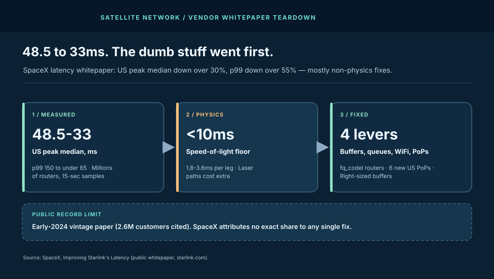
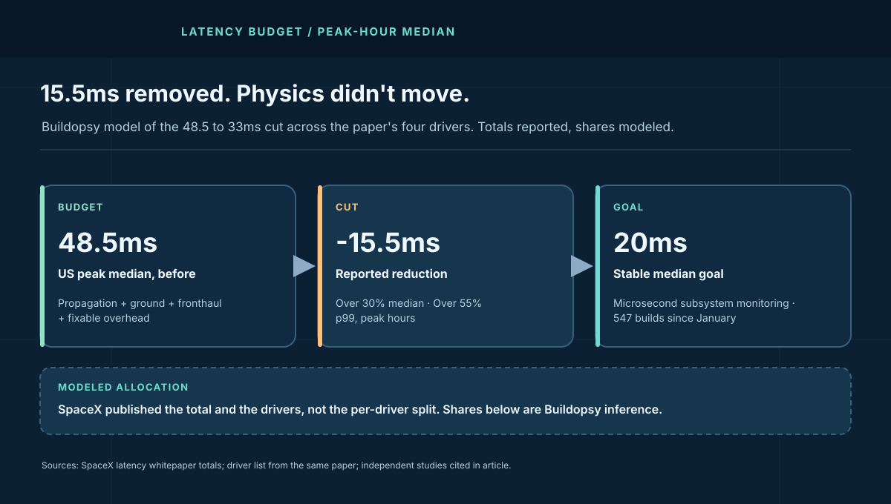

1. The Numbers SpaceX Put on Paper
Vendor latency claims usually arrive as a single best case. This paper is better than that. SpaceX reports distributions (median and p99), names the measurement window (peak hours, 6–9 PM local), and names the instrument (anonymized samples from millions of routers, averaged every 15 seconds). A claim with a denominator, a percentile, and a clock time can be checked. A bare "20ms!" cannot.
| Figure (SpaceX-reported) | Before | After | Cut |
|---|---|---|---|
| US peak-hour median | 48.5ms | 33ms | Over 30% |
| US peak-hour p99 | Over 150ms | Under 65ms | Over 60% |
| Non-US median | Baseline undisclosed | Down up to 25% | Relative only |
| Non-US worst case | Baseline undisclosed | Down up to 35% | Relative only |
Two things stand out before any mechanism. First, the p99 fell roughly twice as fast as the median in relative terms — the signature of queueing fixes, not physics fixes. Shortening the wire moves every percentile together; draining queues collapses the tail while barely touching the middle. Second, the paper's vintage matters: it cites 2.6 million customers and 2024 PoP expansion plans, placing it in the first half of 2024, when the constellation and ground footprint were both far smaller than the multi-thousand-satellite, 6-million-user network that later suffered the July 2025 core outage. Read the numbers as a dated snapshot of a method, not as today's dashboard.
2. The Architecture: Bent Pipe, Extended Pipe, and the Ground That Decides
Every Starlink packet crosses two networks that share one bill. The space segment moves bits from dish to satellite to ground station. The ground segment — gateways, fiber to points of presence, PoP allocation, and the core services that authenticate and route — decides how far those bits travel on Earth. The paper's central argument is that the second network dominated the budget.
The clean case is the bent pipe: dish, one satellite, one nearby ground station, short fiber to a PoP. The expensive case is the extended pipe: satellites relaying across laser inter-satellite links to reach a far-off ground station because no nearby path exists or nearby paths are congested. Independent measurement work — the Mohan team's 19.2-million-sample longitudinal study — confirms the shape: bent-pipe latency holding 36–48ms with a median near 40ms inside the dense orbital shell, holding steady worldwide, with laser-relayed paths trading extra milliseconds for reach into remote regions. Same constellation, different geometry, different bill.
This is the same ground layout whose core services failed outright in July 2025. The outage teardown covers what happens when that core stops; this teardown covers what it costs in milliseconds when it runs. One network, two taxes: availability and latency, both collected on the ground.
3. The Floor: What Physics Allows
Start where SpaceX starts: light. At 550 km altitude the user-to-satellite-to-ground round trip runs 1.8–3.6ms per leg, usually under 10ms total. An IETF measurement deck puts the absolute minimum signal round trip at 3.7ms. Against a 48.5ms peak median, physics explains under a fifth. Everything else is choice — topology, software, and tuning.
State it as the inequality that governs every low Earth orbit (LEO) latency argument: measured latency ≥ propagation floor + ground path + scheduling + software overhead. Only the first term is fixed. The paper's 15.5ms cut came entirely from the other three, which is another way of saying the original network carried roughly 40ms of non-physics — a budget dominated by the vendor's own decisions, not by orbit.
4. The Ground and the Air: PoPs Plus Fronthaul
Ground latency is fiber distance wearing a planning algorithm. Traffic landing at a gateway still has to reach an internet connection point, and the paper admits the 2024 layout was often wrong — hence six new US PoPs plus gateway-location optimization and allocation algorithms that place users at the nearest optimal PoP. This is the cheapest millisecond in networking: no physics changed, no hardware launched, just shorter dirt paths and smarter assignment. Independent studies corroborate the leverage, finding single-digit gateway-to-PoP latencies where placement is right and long detours (a Reunion Island dish served via Frankfurt) where it is not.
Fronthaul — the radio scheduling between satellite and users — is the shared-wireless tax. One beam serves many terminals, and the paper calls scheduling latency inherent yet optimizable, a focus of the preceding months. IETF measurements add texture: satellites assign user terminals in 15-second slots, and independent dishes show globally synchronized performance shifts at 15-second boundaries even with a single satellite in view — load balancing, not handover. A 15-second global scheduler means latency has a heartbeat, and any application with sub-second expectations (gaming, real-time trading, congestion control) lives inside that rhythm whether it knows it or not. The full mechanism — slot allocation, the shielded-dish proof, and the transport consequences — is torn down in the companion 15-second scheduler piece.
5. The Dumb Stuff: Buffers, Queues, and the WiFi in Your Hallway
SpaceX's own term, kept here with respect: "dumb stuff" — unneeded processing delays, unoptimized buffers, unnecessary drops that force retries. Buffers across the network were right-sized against bufferbloat, gateway-link queueing algorithms were improved for ground-to-satellite capacity, and the home WiFi router gained fq_codel active queue management, so one housemate's download stops ruining another's game. None of this is orbital mechanics. All of it showed up in the tail first, which is exactly what the p99's 60% collapse says.
Bufferbloat deserves its reputation as the highest-ROI latency bug in networking. Oversized buffers turn momentary contention into standing queues, and standing queues add delay to every packet while reporting zero loss — the metric dashboard glows green while gamers feel 150ms. Right-sizing plus fair queueing (fq_codel isolates flows so bulk transfer cannot starve interactive traffic) attacks precisely the mechanism behind a fat tail. When a vendor's p99 falls twice as fast as its median, read it as a confession that the queues were the product.
Then the ship velocity, reported and unverified but instructive as process signal: 193 satellite builds, 75 gateway builds, 222 Starlink builds, and 57 WiFi builds since January — 547 software pushes across four fleets. That cadence is how 15.5ms gets removed in months, and it is also how a bad push reaches everywhere in minutes, the exact failure shape of the July 2025 core outage. Velocity cuts latency and multiplies blast radius with the same release train. The canary discipline in the Cloudflare edge teardown applies verbatim: staged rollout, per-cell halt on deviation, or schedule the same evening under a different logo.

6. Field Glossary: Eight Terms This Paper Teaches
Latency writing punishes vague percentiles first. Eight terms, each tied to what the paper reports:
| Term | What it means here | Why it mattered |
|---|---|---|
| p50 / median | Half of 15-second router averages fall below it. | The headline 48.5→33ms; moves only when the common case improves. |
| p99 / worst case | 99% of samples beat it; the tail users actually feel. | Fell over 60% — the fingerprint of queueing fixes. |
| Bent pipe | Dish to one satellite to one nearby ground station. | The cheap path; ~40ms measured in the dense shell. |
| Laser ISL path | Satellite-to-satellite relay to a far-off gateway. | Buys reach and congestion relief; charges extra milliseconds. |
| PoP allocation | Assigning users to internet connection points. | Six new US PoPs plus algorithms shortened dirt paths. |
| Fronthaul | Radio scheduling between satellite beam and terminals. | Shared-wireless tax, tuned under 15-second global rhythm. |
| Bufferbloat | Oversized buffers converting contention into standing delay. | Right-sizing collapsed the tail without touching physics. |
| fq_codel / AQM | Fair queueing that isolates interactive flows from bulk. | Shipped to home routers; downloads stopped killing games. |
Page-load latency budgets and the 10-Mbps finding are taught in the web performance course; PoP layout and saturation drills live in the cloud networking course.
7. What to Steal: The Price of a Millisecond
SpaceX's own example sets the exchange rate: beyond roughly 10 Mbps, extra bandwidth barely moves page-load time, while latency cuts move it directly. That inverts the usual consumer pitch — and the enterprise math with it. Model the value of a millisecond per workload instead of buying bandwidth you cannot feel:
| Workload (labeled model) | Why latency dominates | What the paper proves |
|---|---|---|
| Cloud gaming at 60 fps | 16.7ms frame budget; 150ms tail breaks playability | p99 150→65ms is the difference between unplayable and playable |
| Video calls | Conversational turn-taking degrades past ~150ms one-way | Median 33ms keeps interaction inside the natural window |
| Web page loads | Round trips per object, not bytes, set load time past 10 Mbps | 15.5ms median cut compounds across dozens of fetches |
| Realtime trading / ops | Jitter plus 15-sec scheduler rhythm breaks assumptions | Tail and variance matter more than the median quote |
- Publish p99 at peak, or publish nothing. Medians at off-peak are decoration. The paper's format — percentile, window, sample base — is the minimum honest latency report. Adopt it for your own SLOs and burn the budget with the error budget calculator.
- Right-size buffers before buying capacity. Standing queues tax every packet while reporting zero loss. Audit buffer depth under contention before provisioning fatter pipes.
- Ship fair queueing to the edge you control. fq_codel-class AQM on customer-premises gear protects interactive traffic from bulk flows at near-zero cost — the cheapest millisecond in the paper.
- Allocate users to PoPs like it is routing, because it is. Placement plus assignment algorithms beat concrete: six PoPs and smarter mapping moved medians without launching anything.
- Prefer the lowest-latency path relentlessly, then verify. Microsecond subsystem monitoring plus always-prefer-faster-path algorithms is a culture statement: no millisecond is too small to bill. Pair it with canary discipline, or the 547-build train delivers an outage with the same speed.
Appendix A. Worked Example: Allocating the 15.5ms Cut
Labeled scenario model throughout — SpaceX published the total and the driver list, not the split. One allocation consistent with every reported fact (p99 collapsing fastest implicates queues; physics flat by definition):
| Budget line | At 48.5ms (modeled) | At 33ms (modeled) | Cut |
|---|---|---|---|
| Propagation floor | 8.0ms | 8.0ms | 0 (physics) |
| Ground path (gateway to PoP) | 12.0ms | 8.0ms | 4.0 (PoPs + allocation) |
| Fronthaul scheduling | 10.0ms | 7.0ms | 3.0 (tuning under 15s rhythm) |
| Fixable overhead (buffers, queues, WiFi) | 18.5ms | 10.0ms | 8.5 (right-sizing + fq_codel) |
| Total | 48.5ms | 33.0ms | 15.5ms |
The shape is the finding even if the rows are approximate: more than half the original budget sat in lines the vendor fully controlled, and the single largest cut came from the cheapest fixes. Any LEO latency budget that assigns 80% to orbit is mislabeled. Recompute with your own measurements; the method travels, the plug numbers do not.
Appendix B. Reference Posture: Trusting a Vendor Latency Number
The checklist I would run before quoting any provider's millisecond:
- Percentile plus window plus sample base. p50 or p99, peak or all-day, millions of routers or a lab bench. Missing any one of the three means the number is not comparable to anything.
- Tail behavior stated separately. A median without a p99 hides the queues. Demand both, and check whether the tail moved faster (software) or together (physics).
- Vintage on the page. Networks change quarterly; undated numbers are rumors. Anchor the claim to customer count, fleet size, or build date — the paper's 2.6M customers date it to the first half of 2024.
- Per-fix attribution or an explicit refusal. Totals without splits are fine if labeled; totals presented as proof of one specific fix are not. SpaceX correctly attributes no exact share.
- Independent corroboration of the shape. Peer measurement (arXiv's 19.2M samples, IETF decks) should agree on geometry — bent-pipe baselines, scheduler rhythm — even where absolute numbers differ by era.
- A live dashboard pointer. The paper points at starlink.com/map for regional stats. A claim without a continuing measurement behind it expires on publication.
Pair this review with the web performance course and re-run it whenever a vendor refreshes its numbers. Latency claims rot faster than any other metric because the network underneath never sits still.
Appendix C. Deep Dive: Why TCP Suffers on a Scheduled Sky
IETF measurement decks on Starlink behavior add the transport layer the whitepaper omits — attributed throughout, since none of it is SpaceX's own reporting. At 550 km a satellite footprint spans roughly 900 km radius, 30–50 satellites are visible at mid-latitudes at any moment, and terminals are assigned in 15-second slots. The link therefore combines three properties TCP was not designed for: high-frequency capacity steps as beams reallocate, highly unstable jitter with micro-drops, and loss that signals scheduling rather than congestion.
Loss-based congestion control (CUBIC, and QUIC running CUBIC) reads a scheduling drop as a congested path and pulls the sending rate back — exactly wrong on a link where the capacity returns within the slot. The decks show CUBIC and QUIC/CUBIC over-reacting identically, and BBR-style model-based control holding steadier because it does not treat every loss as a verdict. ACK pacing compounds the pain: TCP optimizes its sending rate over multiple RTT intervals, but the intervals themselves keep changing shape underneath it.
The design lesson is protocol-shaped, not satellite-shaped: on paths with scheduled capacity and non-congestive loss, deploy loss-tolerant control (BBR-class) and measure goodput, not throughput — retransmitted bytes flatter interface counters while users wait. The whitepaper tuned the network; the endpoints still need tuning to match. Both halves bill in the same millisecond.
Appendix D. The Drill: Measure Your Own Sky
The paper's method is reproducible with a dish, a clock, and discipline. Here is a one-evening exercise that mints your own latency budget:
Hour 1: instrument. From a wired host behind the router (never WiFi — the paper improved WiFi separately for a reason), log ICMP plus TCP-connect latency to three targets: your PoP egress, a near-cloud region, and a far one. Bin results in 15-second windows to match both SpaceX's instrument and the scheduler rhythm.
Hours 2–3: capture peak. Measure across the 6–9 PM local window without generating bulk traffic. Record p50, p99, and loss per bin. Watch for synchronized steps at 15-second boundaries — the scheduler's heartbeat showing through your own data.
Hour 4: decompose. Subtract the propagation floor (compute from your dish's approximate latitude and 550 km altitude), then split the remainder by destination: near-target latency isolates fronthaul plus terminal behavior, while far-target minus near-target isolates ground path. Compare against starlink.com/map regional stats. Publish the three numbers with date and firmware version — a dated triple beats a vendor slide every time.
8. The Verdict
SpaceX's paper proves the composition, not just the improvement: a 48.5ms peak median built on a sub-10ms floor, cut to 33ms overwhelmingly through ground layout, scheduling, and queue hygiene, with the p99's sharper collapse fingering the buffers. Independent measurement — 19.2M samples, IETF decks, the 15-second scheduler — corroborates the geometry while differing on absolute numbers, exactly as different eras should. What remains open is everything the paper declines to split: per-fix shares, non-US baselines, and whether the 20ms goal survived the network's more than doubling since.
Fifteen and a half milliseconds. Zero from physics. All from decisions.
What to watch next: whether SpaceX refreshes the paper with current-era numbers, whether PoP allocation keeps pace with user growth in new markets like India, and whether your own latency budget separates the floor you cannot move from the overhead you simply have not billed yet. The speed of light is not negotiable. Everything above it is.
Sources and Method
Totals, drivers, measurement method, build counts, and the 20ms goal are attributed to SpaceX's public latency whitepaper (mid-2024 vintage by its 2.6M-customer count and in-progress 2024 PoP deployment). Per-driver budget shares, cost figures, and drill parameters are Buildopsy's labeled scenario models. Scheduler, bent-pipe, and TCP findings are attributed to the independent studies linked below, not to SpaceX. No internal SpaceX data was used.
- SpaceX: Improving Starlink's Latency (public whitepaper PDF; undated, 2.6M-customer era)
- Mohan, Ferguson, Cech, Bose, Renatin, Marina, Ott (TU Munich / Edinburgh / TU Delft): A Multifaceted Look at Starlink Performance, ACM WWW 2024 (19.2M-sample longitudinal study)
- Mohan et al.: IETF 123 measurement slides (15-sec scheduler analysis, shielded-dish setup)
- Geoff Huston (APNIC), IEPG: Starlink Protocol Performance — 3.7ms propagation floor, 15-sec slots, CUBIC vs BBR
- Buildopsy companion: Starlink core-network outage postmortem
- Buildopsy companion: Starlink 15-second scheduler teardown
- Buildopsy companion: Cloudflare edge outage (canary discipline)